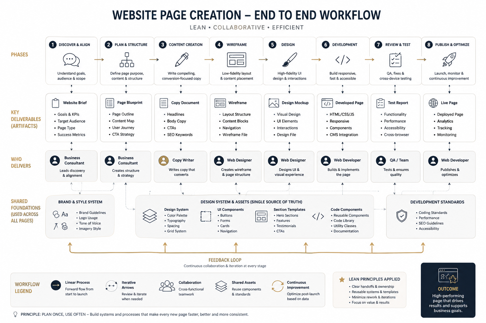

Start here: the SOP process map — the whole thing on one screen, in plain words: nine stages, six approvals, four client meetings and a seven-week timeline. Everyone on the project can read it, including the writer and the client.
Then, for the detail: the full production guide — all twenty-seven steps with the exact instructions we give the AI (canonical, adopted 3 August 2026) · the seven-week schedule — how long each part takes, what runs in parallel, and what makes a project run long · the operating process — phases, gates, roles and the rules that are not negotiable. Then copy _project-starter/ into the project folder and work down the numbered files.
The workflow map
The client-facing view. Send it in a proposal or a kickoff deck. It is deliberately simpler than the way we work internally, and it does not contradict it — it summarises it.

The eight phases
- 1 · Discover & AlignUnderstand goals, audience & scopeBusiness Consultant
- 2 · Plan & StructureDefine page purpose, content & structureBusiness ConsultantGate 0
- 3 · Content CreationWrite conversion-focused copyCopywriter
- 4 · WireframeLow-fidelity layout & placementWeb DesignerGate 1
- 5 · DesignHigh-fidelity UI & interactionsWeb DesignerGate 2
- 6 · DevelopmentBuild responsive, fast, accessibleWeb Developer
- 7 · Review & TestQA, fixes, cross-device testingQAGate 3
- 8 · Publish & OptimizeLaunch, monitor, improveWeb DeveloperGo-live
Three gates, two revision rounds each. A third round is a change request with a price on it. This is the single most important commercial rule in the process.
The deliverable templates
Eight per-project deliverables that move the project forward. Each is a blank fill-in document with a Definition of Done at the bottom.
- 01 · Gate 0Website Brief
Goals & KPIs, audience, page type, success metrics. Business Consultant.
- 02 · Gate 0Page Blueprint
Page outline, priority guide, content map, user journey, CTA strategy. Business Consultant.
- 03 · Gate 1Copy Document
Headlines, body, CTAs, microcopy, SEO elements, readability. Copywriter.
- 04 · Gate 1Wireframe Spec
Layout structure, content blocks, navigation, responsive behaviour. Web Designer.
- 05 · Gate 2Design Mockup Spec
Visual design, tokens, UI elements, contrast audit, character budgets. Web Designer.
- 06 · Gate 3Developed Page Handover
What was built, shared stylesheet, forms, analytics, performance. Web Developer.
- 07 · Gate 3Test Report
Functionality, cross-browser, accessibility, SEO, legal, defect log, go/no-go. QA.
- 08 · Go-liveLaunch Record
Pre-launch, deployment, verification, rollback, monitoring, handover. Web Developer.
The shared foundations
Built once, reused on every page and every later project. These are what make page nine cost a fraction of page one.
- F1 · once per clientBrand & Style System
Logo usage, colour tokens, type scale, tone of voice, imagery policy.
- F2 · livingDesign System & Assets
Token skeleton, UI components, section templates, code components, asset library.
- F3 · livingDevelopment Standards
Coding standards, performance budget, SEO, accessibility, forms, security.
Starting a project
cp -R "_project-starter" \
"../../Web Design Projects/<Client Name>/00-process"The starter folder holds a numbered copy of every template, plus GATE-CHECKLIST.md (what must be true to pass each gate) and PROJECT-LOG.md (decisions, open questions, assumptions, scope changes, time vs estimate).
Copy foundations/ only on the first project for a client. On later projects, link to the existing ones rather than duplicating them.
Maintaining this
- Templates are edited in the Markdown files here and only here. A project copy that improves on a template gets folded back in.
- After editing any
.md, regenerate every HTML twin:python3 build-html-twins.py - Do not hand-edit the generated
.htmlfiles — they are overwritten on the next build. This page andassets/process.cssare the exceptions; they are hand-maintained. - Review the process after every third completed project, or whenever a gate fails twice for the same reason. A gate that fails twice the same way means the template is wrong, not the person.
Related
- Website production sequence playbook (local repo only) — the reasoning behind the sequence, plus per-role operating guides you can print and send to a freelancer. Read once; use this folder every day.
- SEO page QA checklist (local repo only) — the 242-item ship gate that every SEO and service page must pass.
- Skills:
low-cognitive-load-design,low-cognitive-load-copy,web-copy-craft,design-model-routing,seo-page-qa-gate.